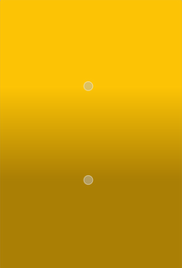

QLinearGradient Class
The QLinearGradient class is used in combination with QBrush to specify a linear gradient brush. More...
| Header: | #include <QLinearGradient> |
| CMake: | find_package(Qt6 REQUIRED COMPONENTS Gui) target_link_libraries(mytarget PRIVATE Qt6::Gui) |
| qmake: | QT += gui |
| Inherits: | QGradient |
- List of all members, including inherited members
- QLinearGradient is part of Painting Classes.
Public Functions
| QLinearGradient() | |
| QLinearGradient(const QPointF &start, const QPointF &finalStop) | |
| QLinearGradient(qreal x1, qreal y1, qreal x2, qreal y2) | |
| QPointF | finalStop() const |
| void | setFinalStop(const QPointF &stop) |
| void | setFinalStop(qreal x, qreal y) |
| void | setStart(const QPointF &start) |
| void | setStart(qreal x, qreal y) |
| QPointF | start() const |
Detailed Description
Linear gradients interpolate colors between start and end points. Outside these points the gradient is either padded, reflected or repeated depending on the currently set spread method:
|  |  |  |
| PadSpread (default) | ReflectSpread | RepeatSpread |
The colors in a gradient is defined using stop points of the QGradientStop type, i.e. a position and a color. Use the QGradient::setColorAt() or the QGradient::setStops() function to define the stop points. It is the gradient's complete set of stop points that describes how the gradient area should be filled. If no stop points have been specified, a gradient of black at 0 to white at 1 is used.
In addition to the functions inherited from QGradient, the QLinearGradient class provides the finalStop() function which returns the final stop point of the gradient, and the start() function returning the start point of the gradient.
See also QRadialGradient, QConicalGradient, and The Gradients Example.
Member Function Documentation
QLinearGradient::QLinearGradient()
Constructs a default linear gradient with interpolation area between (0, 0) and (1, 1).
See also QGradient::setColorAt(), setStart(), and setFinalStop().
QLinearGradient::QLinearGradient(const QPointF &start, const QPointF &finalStop)
Constructs a linear gradient with interpolation area between the given start point and finalStop.
Note: The expected parameter values are in pixels.
See also QGradient::setColorAt() and QGradient::setStops().
QLinearGradient::QLinearGradient(qreal x1, qreal y1, qreal x2, qreal y2)
Constructs a linear gradient with interpolation area between (x1, y1) and (x2, y2).
Note: The expected parameter values are in pixels.
See also QGradient::setColorAt() and QGradient::setStops().
QPointF QLinearGradient::finalStop() const
Returns the final stop point of this linear gradient in logical coordinates.
See also setFinalStop() and QGradient::stops().
void QLinearGradient::setFinalStop(const QPointF &stop)
Sets the final stop point of this linear gradient in logical coordinates to stop.
See also finalStop().
void QLinearGradient::setFinalStop(qreal x, qreal y)
This is an overloaded function.
Sets the final stop point of this linear gradient in logical coordinates to x, y.
See also start().
void QLinearGradient::setStart(const QPointF &start)
Sets the start point of this linear gradient in logical coordinates to start.
See also start().
void QLinearGradient::setStart(qreal x, qreal y)
This is an overloaded function.
Sets the start point of this linear gradient in logical coordinates to x, y.
See also start().
QPointF QLinearGradient::start() const
Returns the start point of this linear gradient in logical coordinates.
See also setStart() and QGradient::stops().